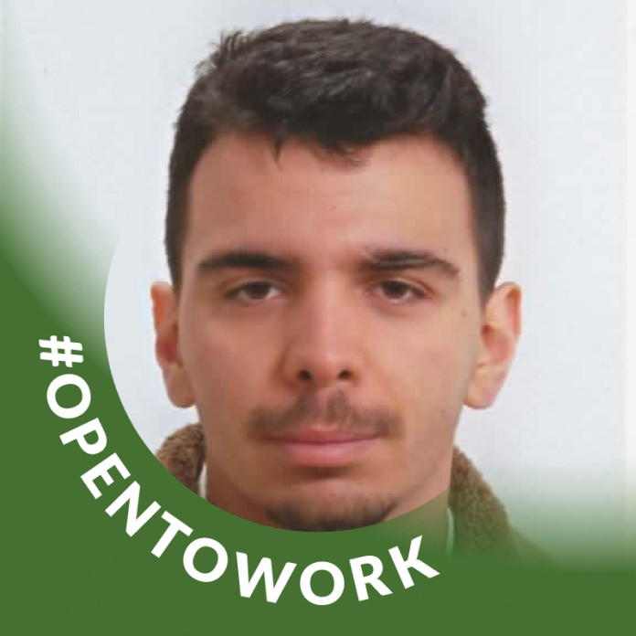
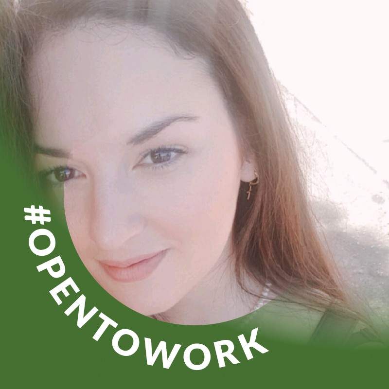

Daniel Camuffo
Daniel, il teamleader del gruppo, ha creato il programma Java del Concorso Online, la homepage del sito e guidato il team nella creazione di tutte le varie sezioni.
Java Developer
GitHub |
LinkedIn

Marta Chiofalo
Marta si è occupata della pagina riguardante i risultati, creando la tabella e la lista che mostra il numero di voti ricevuti da ciascun partecipante.
Java Developer
GitHub
LinkedIn